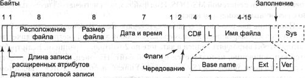
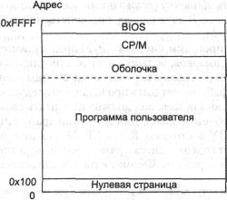
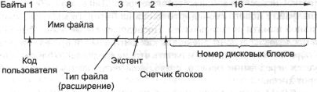
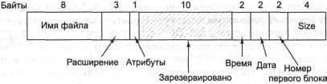
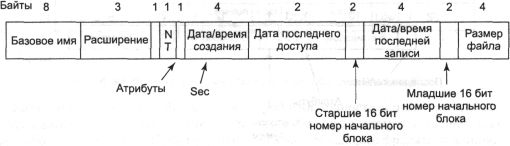
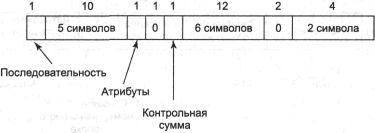
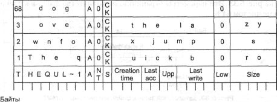
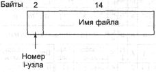
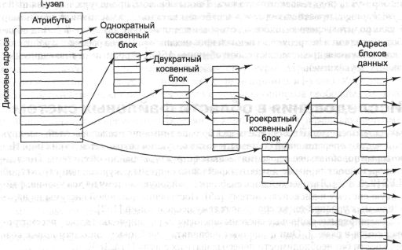
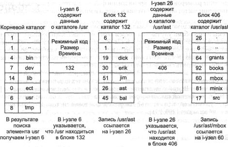

Примеры файловых систем
В следующих разделах мы обсудим несколько примеров файловых систем, от довольно
простых до крайне сложных. Поскольку современные файловые системы UNIX и Windows
2000 будут описываться в отдельных главах этой книги (главы 10 и 11), мы не
станем обсуждать их здесь. Вместо них мы рассмотрим их предшественников.
Файловые системы CD-ROM
В качестве первого примера рассмотрим файловую систему, применяемую на CD-ROM.
Эти системы являются совсем простыми, поскольку они создавались для носителей,
запись на которые могла производиться только один раз. Кроме всего прочего,
в этих файловых системах отсутствует учет свободных блоков, так как файлы на
CD-ROM не могут быть удалены или добавлены после того, как диск уже изготовлен.
Ниже мы рассмотрим основные типы файловых систем для CD-ROM и два варианта расширения
этих систем.
Файловая система ISO 9660
В 1988 году был принят Международный стандарт ISO 9660, описывающий файловые
системы для CD-ROM. Практически каждый продающийся сегодня CD-ROM соответствует
этому стандарту, иногда согласуясь с его расширениями, которые будут обсуждаться
ниже. Одно из назначений этого стандарта заключалось в том, чтобы любой CD-ROM
мог быть прочитан на любом компьютере, независимо от используемых байтового
порядка и операционной системы. Как следствие, на файловую систему были наложены
определенные ограничения, которые должны были позволить читать эти диски даже
самым слабым из использовавшихся тогда операционных систем (таким как MS-DOS).
У CD-ROM нет концентрических цилиндров, как у магнитных дисков. Вместо этого
они содержат непрерывную спираль, на которой последовательно размещены все биты
(хотя поиск поперек спирали также возможен). Биты вдоль спирали разделены на
логические блоки (также называемые логическими секторами) по 2352 байт. Некоторые
из этих байтов используются для преамбул, коррекции ошибок и других накладных
расходов. Полезная нагрузка в каждом блоке составляет 2048 байт. Аудиодиски
содержат специальные разделительные участки между композициями, а также специальные
заголовки и концевики для каждой фонограммы, не используемые в CD-ROM, содержащих
другие данные. Часто позиция блока в спирали указывается в минутах и секундах.
Она может быть преобразована в линейный номер блока, так как каждая секунда
содержит 75 блоков.
Стандарт ISO 9660 также поддерживает наборы размером до 216-1
CD-ROM. Сами CD-ROM также могут быть разделены на отдельные логические тома
(разделы). Однако ниже будет обсуждаться стандарт ISO 9660 для одного CD-ROM,
не разделенного на тома.
Каждый CD-ROM начинается с 16 блоков, чья функция не определяется стандартом
ISO 9660. Производитель CD-ROM может использовать эту область для размещения
загрузчика операционной системы или для другой цели. Следом располагается один
блок, содержащий основной описатель тома, в котором хранится некоторая
общая информация о CD-ROM. Среди данных, содержащихся в этом блоке, идентификатор
системы (32 байт), идентификатор тома (32 байт) идентификатор издателя (128
байт), и идентификатор лица, подготовившего данные (128 байт). Производитель
диска может заполнить эти поля произвольным образом, с условием, что он будет
использовать только символы верхнего регистра, цифры и очень ограниченное количество
знаков препинания, чтобы гарантировать совместимость с различными платформами.
Основной описатель тома также содержит имена трех файлов, в которых могут
храниться краткий обзор, уведомление об авторских правах и библиографическая
информация соответственно. Кроме того, в этом блоке также содержатся определенные
ключевые числа, включающие размер логического блока (как правило, 2048, однако
в определенных случаях могут использоваться блоки большего размера, например
4096, 8192 и других степеней двух), количество блоков на CD-ROM, а также дата
создания и дата окончания срока службы диска. Наконец, основной описатель тома
также содержит описатель корневого каталога, что позволяет найти этот каталог
на CD-ROM (то есть определить номер блока, содержащего начало каталога). Начиная
с этого каталога, можно определить местонахождение всей остальной файловой системы.
Помимо основного описателя тома, CD-ROM-диск может содержать дополнительный
описатель тома. В нем хранится информация, сходная с хранящейся в основном описателе,
но мы не станем рассматривать его в этой книге.
Корневой каталог и все остальные каталоги могут содержать переменное количество
записей, в последней из которых установлен специальный бит, помечающий эту запись
как последнюю. Сами каталоговые записи также могут иметь переменную длину. Каждая
запись содержит от 10 до 12 полей, некоторые из них содержат текст формата ASCII,
а другие являются числовыми двоичными полями. Двоичные поля кодируются дважды,
один раз в формате, используемом в процессорах типа Pentium (сначала младшие
байты, затем старшие), и один раз в формате, используемом в процессоре SPARC
(сначала старшие байты, затем младшие). Следовательно, 16-разрядное число занимает
4 байт, а 32-разрядное число 8 байт. Такое избыточное кодирование было использовано
при разработке стандарта, чтобы никого не обидеть. Если бы стандарт учитывал
только один из способов хранения двоичного числа, тогда сотрудники компаний,
в которых применяется другой способ, посчитали бы, что их отнесли к гражданам
второго сорта и не приняли бы стандарт. Таким образом, эмоциональное содержание
CD-ROM может быть точно измерено в килобайтах потерянного пространства.
Формат каталоговой записи стандарта ISO 9660 показан на рис. 6.26. Поскольку
каталоговые записи могут быть переменной длины, первое поле записи представляет
собой байт, содержащий длину записи. Во избежание любых двусмысленностей стандартом
определено, что старший бит этого байта располагается слева.

Рис. 6.26. Каталоговая запись стандарта ISO 9660
Записи каталогов могут иметь расширенные атрибуты. Если для каталоговой записи
используется это свойство, тогда второй байт содержит длину записи расширенных
атрибутов.
Следом располагается номер начального блока файла. Файлы хранятся на диске
в виде непрерывных последовательностей блоков, так что размещение файла на диске
однозначно определяется начальным блоком и размером, значение которого содержится
в следующем поле.
В следующем поле хранятся дата и время записи
CD-ROM. Значения года, месяца, дня, часа, минуты, секунды и временной зоны хранятся
в отдельных байтах. Годы отсчитываются от 1900, что означает, что CD-ROM будут
страдать от проблемы 2156 года, так как следом за 2155 годом для них наступит
1900 год. Возникновение этой проблемы можно было отложить на 88 лет, приняв
за точку отсчета 1988 (год принятия стандарта). Если бы это было сделано, проблему
можно было бы отложить до 2244 года.
Поле Flags (флаги) содержит несколько различных управляющих битов,
один из которых позволяет скрывать запись при отображении каталога (свойство,
взятое из MS-DOS), другой разрешает использование расширенных атрибутов, а третий
помечает последнюю запись в каталоге. Мы не станем рассматривать здесь остальные
биты этого поля. Следующее поле описывает особенности чередования частей файла
на диске. Это свойство не используется в простейшей версии стандарта ISO 9660,
поэтому оно не будет обсуждаться в данной книге.
Еще одно поле указывает местоположение файла на CD-ROM. Стандарт допускает
возможность расположения файла на другом CD-ROM набора. Таким образом, можно
создать на одном CD-ROM главный каталог, содержащий все файлы всех остальных
CD-ROM набора.
Поле, отмеченное на рис. 6.26 символом L, содержит длину имени файла
в байтах. За ним следует само имя файла, состоящее из базового имени (base
name на рисунке), точки, расширения, точки с запятой и версии файла в двоичном
формате (один или два байта). В базовом имени и расширении могут использоваться
прописные символы, цифры от 0 до 9 и символ подчеркивания. Все остальные символы
запрещены, чтобы гарантировать, что каждый компьютер сможет работать со всеми
файлами на диске. Базовое имя может быть длиной до восьми символов; расширение
— до трех символов. Такой выбор был продиктован необходимостью совместимости
с системой MS-DOS. Имя файла может встречаться несколько раз, но с различными
номерами версий.
Последние два поля не всегда присутствуют. Поле Padding (заполнение)
используется для выравнивания размера каталоговой записи до четного количества
байтов, чтобы выровнять записи в каталоге по 2-байтовым границам. Если требуется
выравнивание, используется нулевой байт. Наконец, функция и размер последнего
поля System use (Sys на рисунке) никак не определяются стандартом. В
стандарте указывается лишь, что это поле должно состоять из четного числа байтов.
В различных операционных системах это поле используется различным образом. Например,
Macintosh хранит в этом поле флаги Finder.
Все записи каталога, кроме первых двух, располагаются в алфавитном порядке.
Первая запись представляет собой описатель самого каталога. Вторая запись является
ссылкой на родительский каталог. В этом смысле эти записи аналогичны каталоговым
записям «.» и «..» в UNIX.
Количество каталоговых записей не ограничено. Однако существует ограничение
глубины вложенности каталогов. Максимальная глубина вложенности каталогов равна
восьми.
Стандартом ISO 9660 определены так называемые три уровня. На уровне 1 применяются
самые жесткие ограничения. Имена файлов ограничиваются уже описанной выше схемой
8 + 3, а имена каталогов могут состоять из восьми символов и не могут иметь
расширений. Кроме того, уровень 1 требует, чтобы все файлы были непрерывными.
Использование этого уровня обеспечивает совместимость CD-ROM с самым широким
спектром систем.
Уровень 2 ослабляет ограничение на длину имени. Он позволяет файлам и каталогам
иметь имена до 31 символа, но из того же набора символов.
На уровне 3 используются те же ограничения имен, что и на уровне 2, но ослабляется
жесткость требования непрерывности файлов. На этом уровне файл может состоять
из нескольких разделов, каждый из которых представляет собой непрерывную последовательность
блоков. Одна и та же последовательность блоков может несколько раз встречаться
в одном файле и даже входить в несколько различных файлов. Такая организация
файловой системы позволяет экономить место на диске.
Рок-Ридж расширения
Как было показано, стандарт ISO 9660 содержит много различных ограничений. Вскоре
после выхода этого стандарта пользователи из UNIX-сообщества начали работу над
его расширением, чтобы файловая система UNIX могла быть представлена на CD-ROM.
Эти расширения получили название Рок-Ридж (Rock Ridge) по городу из фильма Джина
Уайлдера Blazing Saddles (Огненные седла), вероятно, потому, что этот
фильм нравился одному из членов комитета.
Расширение использует поле System use, чтобы CD-ROM формата Рок-Ридж
мог читаться на любом компьютере. Все остальные поля соответствуют требованиям
стандарта ISO 9660. Система, не знакомая с расширениями Рок-Ридж, просто игнорирует
их и видит нормальный CD-ROM.
Расширения содержат следующие поля:
1. РХ - Атрибуты POSIX.
2. PN — Старший и младший номера устройств.
3. SL — Символьная связь.
4. NM — Альтернативное имя.
5. CL — Расположение дочернего узла.
6. PL — Расположение дочернего узла.
7. RE — Перераспределение.
8. TF — Временные штампы.
Поле РХ содержит стандартные биты разрешений rwxrwxrwx системы UNIX
для владельца, группы и всех остальных. Оно также содержит остальные биты слова
состояния, такие как SETUID, SETGID и т. п.
Чтобы необработанные устройства могли быть представлены на CD-ROM, вводится
поле PN. Оно содержит старший и младший номера устройств, ассоциированных
с файлом. Таким образом, содержимое каталога /dev может быть записано
на CD-ROM и позднее правильно воссоздано на другой системе.
Поле SL используется для символьных связей. Оно позволяет файлу из
одной файловой системы ссылаться на файл из другой файловой системы.
Вероятно, наиболее важным является поле NM. С его помощью можно указать
для файла второе имя. Этого имени не касаются ограничения стандарта ISO 9660,
что позволяет указывать произвольные имена файлов системы UNIX на CD-ROM.
Следующие три поля используются вместе, чтобы обойти ограничения стандарта
ISO 9660 на глубину вложенности каталогов. С их помощью можно указать, куда
в дереве иерархии должен быть перемещен тот или иной каталог.
Наконец, поле ТF содержит три временных штампа, включаемые в каждый
i-узел системы UNIX, а именно: время создания файла, последнего изменения файла
и последнего доступа к файлу. Все вместе эти расширения позволяют скопировать
файловую систему UNIX на CD-ROM, а затем корректно восстановить ее на другой
машине.
Расширения Joliet
Сообщество UNIX было не единственной группой, которой требовалось расширение
стандарта ISO 9660. Корпорация Microsoft также пришла к выводу, что стандарт
ISO 9660 содержит слишком много ограничений (хотя большинство ограничений было
вызвано в первую очередь требованием совместимости с файловой системой MS-DOS
фирмы Microsoft). Поэтому корпорация Microsoft разработала некоторые расширения,
названные Joliet. Они должны были позволить копировать на CD-ROM-диск
и восстанавливать с него файловую систему Windows подобно тому, как расширения
Рок-Ридж позволяли работать с файловой системой UNIX. Теоретически все программы,
работающие в операционной системе Windows и использующие CD-ROM, включая программы
записи на CD-R, поддерживают расширение Joliet.
Основными расширениями, содержащимися в Joliet, являются:
1. Длинные имена файлов.
2. Набор символов Unicode.
3. Глубина вложенности каталогов, превышающая восемь уровней.
4. Имена каталогов с расширениями.
Первое расширение позволяет использовать имена файлов длиной до 64 символов.
Второе расширение разрешает использовать для имен файлов символы Unicode. Это
расширение важно для программного обеспечения, предназначенного для распространения
в странах, в которых не используется латинский алфавит, таких как Япония,
Израиль или Греция. Поскольку символы Unicode занимают два байта, максимальное
имя файла в расширении Joliet занимает 128 байт.
Как и Рок-Ридж, расширение Joliet устраняет ограничение на глубину вложенности
каталогов. Каталоги могут вкладываться друг в друга на любую требуемую глубину.
Наконец, у имен каталогов могут быть расширения. Неясно, почему было включено
такое расширение стандарта, поскольку каталоги в файловой системе Windows практически
никогда не используют расширений, но, возможно, однажды они потребуются.
Файловая система СР/М
Первые персональные компьютеры (называвшиеся тогда мини-компьютерами) появились
в начале 80-х годов. В одной популярной модели персонального компьютера использовался
8-разрядный центральный процессор Intel 8080. У этого компьютера было 4 Кбайт
ОЗУ и один 8-дюймовый накопитель для сменных гибких дисков емкостью 180 Кбайт.
В более поздних версиях этой машины применялся несколько более мощный (хотя
все равно 8-разрядный) процессор Zilog Z80. У него было до 64 Кбайт ОЗУ и огромный
720-килобайтный гибкий диск в качестве основного устройства хранения данных.
Несмотря на невысокое быстродействие и небольшое количество памяти, почти на
всех этих машинах работала удивительно мощная дисковая операционная система
СР/М (Control Program for Microcomputers — управляющая программа для
микрокомпьютеров) [130]. Эта операционная система была доминирующей в свою эпоху,
так же как MS-DOS и позднее Windows стали лидерами в мире IBM PC. Двадцать лет
спустя она исчезла, не оставив следа (если не считать малочисленной группы твердокаменных
сторонников), и это наводит на мысль о том, что системы, лидирующие сегодня
в мире (например, Windows), могут оказаться никому неизвестными к тому времени,
когда сегодняшние карапузы станут студентами колледжей.
Стоит взглянуть на операционную систему СР/М по нескольким причинам. Во-первых,
исторически это была очень важная система, ставшая прямым предшественником системы
MS-DOS. Во-вторых, разработчики сегодняшних операционных систем и систем будущего,
полагающие, что компьютеру требуется 32 Мбайт памяти, только чтобы загрузить
в нее операционную систему, могут поучиться простоте системы, которой вполне
хватало 16 Кбайт ОЗУ. В-третьих, в ближайшие десятилетия широкое применение
получат встроенные системы. В связи с ограничениями в цене, размерах, весе и
потребляемой мощности операционные системы, используемые, например, в часах,
видео- и фотокамерах, радиоприемниках и сотовых телефонах, обязательно должны
быть компактными, подобно операционной системе СР/М. Конечно, у этих систем
не будет 8-дюймовых гибких дисков, но они вполне могут пользоваться электронными
дисками во флэш-ОЗУ, на которых несложно организовать файловую систему, подобную
СР/М.
Распределение памяти в системе СР/М показано на рис. 6.27. Наверху оперативной
памяти (в ОЗУ) располагается базовая система ввода-вывода BIOS, содержащая базовую
библиотеку — 17 вызовов ввода-вывода, используемых системой СР/М (в данном разделе
мы рассмотрим СР/М 2.2, являвшуюся стандартной версией, когда СР/М была на вершине
популярности). Эти системные вызовы предназначены для чтения и записи с гибкого
диска, ввода с клавиатуры и вывода на экран.

Рис. 6.27. Распределение памяти в системе СР/М
Сразу под BIOS располагается сама операционная система. Для версии СР/М 2.2
ее размер составляет 3584 байт. Невероятно, но факт: вся операционная система
занимала менее 4 Кбайт. Под операционной системой размещается оболочка (обработчик
командных строк), съедающая еще 2 Кбайт. Остальная память используется для программ
пользователя, кроме нижних 256 байт, зарезервированных для векторов аппаратных
прерываний, некоторых переменных и буфера для текущей командной строки, в котором
к ней могут получить доступ программы пользователя.
Причина, по которой система BIOS отделена от самой операционной системы СР/М
(хотя обе системы располагаются в ОЗУ), заключается в переносимости. Операционная
система СР/М взаимодействует с аппаратурой только с помощью обращений к BIOS.
Для переноса системы СР/М на новую машину нужно всего лишь перенести туда BIOS.
Когда это сделано, сама СР/М может быть установлена без изменений.
В файловой системе СР/М всего один каталог, содержащий записи фиксированного
размера (32 байт). Размер каталога, фиксированный для данной реализации, может
отличаться в других реализациях системы СР/М. В этом каталоге перечисляются
все файлы системы. После загрузки система считывает каталог и рассчитывает битовый
массив занятых и свободных блоков. Этот битовый массив, размер которого для
180-килобайтного диска составляет всего 23 байта, постоянно хранится в оперативной
памяти. После завершения работы операционной системы он не сохраняется на диске.
Благодаря такому подходу исчезает необходимость
в проверке непротиворечивости файловой системы на диске (вроде той, что выполняет
программа fsck в UNIX) и сохраняется на диске один блок (в процентном
отношении это эквивалентно сохранению 90 Мбайт на современном 16-гигабайтном
диске).
Когда пользователь набирает команду, оболочка сначала копирует ее в буфер
в нижние 256 байт памяти. Затем она ищет вызываемую программу и загружает ее
в память по адресу 256 (над вектором прерываний), после чего передает управление
по этому адресу. Программа начинает работу. Она обнаруживает свои параметры
в буфере командной строки. Программе разрешается использовать память, занимаемую
оболочкой, если ей нужно много памяти. Закончив работу, программа выполняет
системный вызов СР/М, сообщая операционной системе, что следует перезагрузить
оболочку (если занимаемая ею память использовалась программой) и запустить ее.
В двух словах, вот, собственно, и весь рассказ об операционной системе СР/М.
Помимо загрузки программ, система СР/М предоставляет программам пользователя
38 системных вызовов, большей частью относящихся к файловой службе. Наиболее
важными из них являются системные вызовы чтения из файла и записи в файл. Прежде
чем файл может быть прочитан, его следует открыть. Когда СР/М получает системный
вызов open, она должна прочитать свой единственный каталог и найти в нем требуемый
файл. Для экономии драгоценной памяти этот каталог не хранится в ОЗУ постоянно.
Когда СР/М обнаруживает описатель файла, она сразу же получает содержащиеся
прямо в нем номера дисковых блоков файла, а также все остальные атрибуты. Формат
каталоговой записи показан на рис. 6.28.

Рис. 6.28. Формат каталоговой записи в системе СР/М
Значение полей на рис. 6.28 следующее. Поле User code (код пользователя)
указывает владельца файла. Хотя в каждый конкретный момент времени в системе
СР/М может находиться лишь один пользователь, системой поддерживается поочередная
работа нескольких пользователей. При поиске имени файла файловая система проверяет
только записи, принадлежащие текущему зарегистрировавшемуся пользователю. В
результате каждый пользователь получает свой виртуальный каталог без необходимости
управлять несколькими каталогами.
В следующих двух полях содержатся имя и расширение файла. Размер базового
имени может быть до восьми символов. Также может использоваться (необязательное)
расширение файла длиной до трех символов. Формат имени файла из 8 + 3 символов
верхнего регистра был позднее заимствован в MS-DOS.
Поле Block count (счетчик блоков) содержит размер файла, измеренный
в единицах по 128 байт (так как ввод-вывод выполняется в 128-байтовых
физических секторах). Последний килобайтный блок файла может быть заполнен не
до конца, поэтому у системы нет способа определить точный размер файла. Конец
файла может быть при необходимости указан пользователям с помощью специального
маркера. Последние 16 полей содержат сами номера дисковых блоков, занимаемых
файлом. Размер каждого блока 1 Кбайт, поэтому максимальный размер файла равен
16 Кбайт. Обратите внимание, что физический ввод-вывод выполняется в 128-байтовых
секторах и размер файла хранится в 128-байтовых секторах, но файлам выделяются
блоки размером по 1 Кбайт (сразу по 8 секторов), чтобы не увеличивать размер
каталоговой записи.
Однако разработчик системы СР/М понимал, что некоторые файлы, даже на 180-килобайтном
гибком диске, могут превзойти размер 16 Кбайт, поэтому для обхода 16-килобайтного
ограничения был придуман следующий трюк. Для файла размером от 16 до 32 Кбайт
используется не одна каталоговая запись, а две. В первой записи содержатся номера
первых 16 блоков диска; во второй записи — следующие 16 блоков. При превышении
файлом 32 Кбайт требуется третья каталоговая запись и т. д. Порядковый номер
каталоговой записи хранится в поле Extent (экстент), благодаря которому
операционная система может определить, какие 16 Кбайт находятся в начале файла,
какие идут следом и т. д.
После того как системный вызов open выполнен, адреса всех дисковых блоков
становятся известны, поэтому реализация системного вызова read не представляет
сложности. Системный вызов write также прост. Для этого требуется всего лишь
выделение файлу нового свободного блока из битового массива, хранящегося в оперативной
памяти, и запись блока. Последовательные блоки файла не располагаются последовательно
на диске, так как центральный процессор Intel 8080 не успевает обработать прерывание
и начать чтение следующего блока. Вместо этого используется чередование блоков,
позволяющее считывать несколько блоков за один оборот диска.
Система СР/М, очевидно, не является последним словом в области современных
файловых систем, но она отличается своей простотой, скоростью и может быть реализована
компетентным программистом менее чем за неделю. Для многих встроенных приложений,
возможно, большего и не требуется.
Файловая система MS-DOS
В первом приближении файловая система MS-DOS представляет собой увеличенную
и улучшенную версию СР/М. Она работает только на платформах с центральным процессором
Intel, не поддерживает многозадачности и работает лишь в реальном режиме IBM
PC (изначально этот режим был единственным режимом). Оболочка содержит больше
возможностей, чем в СР/М, системных вызовов тоже больше в MS-DOS, но основной
функцией операционной системы все также остается загрузка программ, управление
экраном, обработка ввода с клавиатуры и управление файловой системой. Именно
последняя функция и будет интересовать нас в данной главе.
Файловая система MS-DOS во многом напоминает файловую систему СР/М, включая
использование имен файлов, состоящих из 8 + 3 символов верхнего регистра. В
первой версии системы (MS-DOS 1.0) был даже всего один каталог, как и в СР/М.
Однако, начиная с MS-DOS 2.0, функциональность файловой системы значительно
расширилась. Самым серьезным улучшением явился переход на иерархическую файловую
систему, в которой каталоги могли вкладываться друг в друга на произвольную
глубину. Это означало, что корневой каталог (размер которого по-прежнему был
ограничен) мог содержать подкаталоги, которые, в свою очередь, также могли содержать
подкаталоги и т. д. до бесконечности. Связи, принятые в UNIX, не допускались,
поэтому файловая система представляла собой дерево, начинавшееся в корневом
каталоге.
Различные прикладные программы довольно часто начинают с того, что создают
в корневом каталоге подкаталог, в который складывают все свои файлы, что позволяет
программам избежать конфликта. Так как сами каталоги хранятся в MS-DOS как файлы,
нет никакого ограничения на число каталогов или файлов на диске. Однако в отличие
от СР/М, в MS-DOS нет концепции различных пользователей. Соответственно, любой
вошедший в систему пользователь получает доступ сразу ко всем файлам.
Чтобы прочитать файл, программа, работающая в системе MS-DOS, должна сначала
сделать системный вызов open, чтобы получить дескриптор файла. Системному вызову
open в качестве одного из входных аргументов следует указать путь к файлу, который
может быть как абсолютным, так и относительным (относительно текущего каталога).
Файловая система открывает каталоги, перечисленные в пути, один за другим, пока
не обнаруживает последний каталог, который считывается в оперативную память.
Затем в считанном каталоге ищется описатель файла, который требуется открыть.
Хотя каталоги в файловой системе MS-DOS переменного размера, используемые
каталоговые записи, как и в СР/М, имеют фиксированный размер 32 байт. Формат
описателя файла системы MS-DOS показан на рис. 6.29. В нем содержится имя файла,
его атрибуты, дата и время создания, номер начального блока и точный размер
файла. Имена файлов короче 8 + 3 символов выравниваются по левому краю полей
и дополняются пробелами, каждое поле отдельно. Поле Attributes (атрибуты)
представляет собой новое поле, содержащее биты, указывающие, что для файла разрешено
только чтение, что файл должен быть заархивирован, что файл является системным
или скрытым. Запись в файл, для которого разрешено только чтение, не разрешается.
Таким образом осуществляется защита файлов от случайной записи или удаления.
Бит archived (архивный) не устанавливается и не проверяется операционной
системой MS-DOS. Он зарезервирован в описателе для архивирующих программ уровня
пользователя, сбрасывающих этот бит при создании резервной копии файла, в то
время как программы, модифицирующие файл, должны устанавливать этот бит. Таким
образом архивирующая программа может определить, какие файлы подлежат архивации.
Бит hidden (скрытый файл) позволяет избежать отображения файла в перечне
файлов каталога. Основное его назначение заключается в том, чтобы скрыть от
неопытных пользователей файлы, назначение которых им неизвестно. Наконец, бит
system (системный) также скрывает файлы и защищает их от случайного удаления
командой del. Этот бит установлен у основных компонентов системы MS-DOS.

Рис. 6.29. Формат каталоговой записи в системе MS-DOS
Каталоговая запись также содержит дату и время создания или последнего изменения
файла. Время хранится с точностью ±2 с,
так как для него отведено 2-байтовое поле, способное содержать всего 65 536
уникальных значений, а в сутках 86 400 с. Поле времени разбивается на подполя
секунд (5 бит), минут (6 бит) и часов (5 бит). 16-разрядное поле даты также
разбивается на три подполя: день (5 бит), месяц (4 бит) и год — 1980 (7 бит).
При 7 двоичных разрядах для хранения года и 1980 в качестве точки отсчета максимальное
значение года, которое можно выразить таким способом, — это 2107-й. Таким образом,
файловая система MS-DOS имеет встроенную проблему 2108 года. Чтобы избежать
катастрофы, пользователи системы MS-DOS должны начать готовиться к 2108 году
как можно раньше. Если бы в MS-DOS использовался единый 32-разрядный счетчик
секунд, точность представления времени была бы в два раза выше, а катастрофу
можно было бы отложить до 2116 года.
В отличие от файловой системы СР/М, не хранящей точного размера файла, система
MS-DOS хранит точный размер. Поскольку для размера файла используется 32-разрядное
число, в теории файлы могут быть размером до 4 Гбайт. Однако другие пределы
(описываемые ниже) ограничивают максимальный размер файла размером 2 Гбайт или
меньше. Удивительно большая часть описателя файла (10 байт) не используется.
Другое отличие системы MS-DOS от СР/М состоит в том, что дисковые адреса
файлов не хранятся прямо в их описателях, возможно, поскольку разработчики системы
понимали, что большие жесткие диски (обычные в то время на мини-компьютерах)
однажды появятся в мире MS-DOS. Вместо этого файловая система MS-DOS хранит
номера блоков файла в специальной таблице размещения файлов, в оперативной памяти.
В каталоговой записи хранится номер первого блока файла. Этот номер используется
в качестве индекса для 64 К элементов FAT-таблицы,
хранящейся в оперативной памяти. Все блоки файла могут быть найдены, если проследовать
по цепочке элементов таблицы. Принцип действия FAT-таблицы проиллюстрирован
на рис. 6.11.
В зависимости от количества блоков на диске в системе MS-DOS применяется
три версии файловой системы FAT: FAT-12, FAT-16 и FAT-32. В действительности
FAT-32 является неверным названием, так как используются только 28 младших битов
дискового адреса. Ее следовало бы назвать FAT-28, но степени двух звучат гораздо
приятнее.
Во всех файловых системах FAT размер блока диска в байтах может быть установлен
равным некоторому числу, кратному 512 (возможно, различному для каждого раздела
диска), с наборами разрешенных размеров блоков (называемых корпорацией Microsoft
размерами кластеров), различными для каждого варианта FAT. В первой версии
системы MS-DOS использовалась FAT-12 с 512-байтовыми блоками, что позволяло
создавать дисковые разделы размером до 212 х 512 байт (на самом деле
только 4086 х 512 байт, так как 10 дисковых адресов использовались как специальные
маркеры — конец файла, дефектный блок и т. д.). При этом максимальный размер
дискового раздела мог составлять 2 Мбайт, а в оперативной памяти FAT-таблица
занимала 4096 элементов по два байта каждый. Кроме того, обработка 12-разрядных
адресов была довольно медленной.
Такая система неплохо работала на гибких дисках, но с появлением жестких
дисков появились проблемы. Корпорация Microsoft попыталась решить проблему,
разрешив использовать дисковые блоки (кластеры) размером 1, 2 и 4 Кбайт. Это
позволило сохранить структуру и размер таблицы FAT-12 и увеличить размер дискового
раздела до 16 Мбайт.
Так как система MS-DOS поддерживала до четырех дисковых разделов на диске,
новая файловая система FAT-12 могла работать с дисками емкостью до 64 Мбайт.
Для поддержки винчестеров большего размера нужно было предпринимать что-то еще.
В результате была разработана файловая система FAT-16, с 16-разрядными дисковыми
указателями. Дополнительно было разрешено использовать кластеры размеров 8,
16 и 32 Кбайт. (32 768 — это максимальное число, представляющее собой степень
двух, которое может быть представлено 16 двоичными разрядами.) Теперь таблица
FAT-16 постоянно занимала 128 Кбайт оперативной памяти, но с ростом размеров
памяти компьютеров она получила широкое применение и быстро вытеснила файловую
систему FAT-12. Максимальный размер дискового раздела, поддерживаемый системой
FAT-16, равен 2 Гбайт (64 К элементов по 32 Кбайт каждый), а максимальный размер
диска — 8 Гбайт, то есть четыре раздела по 2 Гбайт каждый.
Для хранения деловой переписки такое ограничение проблем не вызывает, однако
при работе с цифровым видео в стандарте DV один 2-гигабайтный файл вмещает всего
лишь немногим более 9 мин видеофильма. Таким образом, на весь диск из четырех
разделов может поместиться около 38 мин видео, независимо от размеров самого
диска. Это ограничение также означает, что в режиме on-line редактировать можно
не более 19 мин фильма, так как на диске требуется одновременно хранить и входные
и выходные файлы.
С выходом второй версии операционной системы Windows 95 была представлена
файловая система FAT-32 со своими 28-разрядными адресами. При этом версия системы
MS-DOS, лежащая в основе Windows 95, была адаптирована для поддержки FAT-32.
Теоретически в этой системе разделы могли быть по 228 х 215
байт, но фактически размер разделов ограничен 2 Тбайт (2048 Гбайт), так как
внутренне система учитывает размеры разделов в 512-байтовых секторах с помощью
32-разрядных чисел, а 232 х 29 байт равно 2 Тбайт. Максимальный
размер раздела для всех трех типов FAT и различных размеров кластеров показан
в табл. 6.3. Пустым элементам таблицы соответствуют запрещенные комбинации.
Таблица 6.3. Максимальный размер раздела для различных
размеров кластеров
| Размер кластера,
Кбайт |
FAT-12, Мбайт
|
FAT-16, Мбайт
|
FAT-32, Тбайт
|
| 0,5 |
2 |
|
|
| 1 |
4 |
|
|
| 2 |
8 |
128 |
|
| 2 |
16 |
256 |
1 |
| 8 |
|
512 |
2 |
| 16 |
|
1024 |
2 |
| 32 |
|
2048 |
2 |
Помимо поддержки дисков большего размера, файловая система FAT-32 обладает
двумя другими преимуществами перед системой FAT-16. Во-первых, 8-гигабайтный
диск, использующий FAT-32, может состоять из всего одного раздела. При использовании
FAT-16 он должен был содержать четыре раздела, что представлялось пользователям
системы Windows как логические устройства С:, D:, Е: и F:. Какой файл на каком
устройстве располагать, решать пользователю.
Другое преимущество FAT-32 перед FAT-16 заключается в том, что для дискового
раздела заданного размера могут использоваться блоки меньшего размера. Например,
для 2-гигабайтного дискового раздела система FAT-16 должна пользоваться 32-килобайтными
блоками, в противном случае при наличии всего 64 К доступных дисковых адресов
она не смогла бы покрыть весь раздел. В то же время система FAT-32 для такого
же дискового раздела может использовать, например, блоки размером 4 Кбайт. Преимущество
блоков меньшего размера заключается в том, что длина большинства файлов менее
32 Кбайт. При размере блока в 32 Кбайт даже 10-байтовый файл будет занимать
на диске 32 Кбайт. Если средний размер файлов, скажем, равен 8 Кбайт, тогда
при использовании 32-килобайтных блоков около 3/4 дискового пространства будет
теряться, то есть эффективность использования диска будет низкой. При 8-килобайтных
файлах и 4-килобайтных блоках потерь дискового пространства не будет, но платой
за это будет то, что для хранения таблицы FAT потребуется значительно больше
оперативной памяти. При 4-килобайтных блоках 2-гигабайтный раздел будет состоять
из 512 К блоков, поэтому таблица FAT должна состоять из 512 К элементов (занимая
2 Мбайт ОЗУ). Файловая система MS-DOS использует FAT для учета свободных блоков.
Любой незанятый блок помечается специальным кодом. Когда системе MS-DOS требуется
новый блок на диске, она ищет этот код в таблице FAT. Таким образом, битовый
массив или список свободных блоков не нужны.
Файловая система Windows 98
Первая версия операционной системы Windows 95 использовала файловую систему
MS-DOS, с именами файлов из 8 + 3 символов и системами FAT-12 и FAT-16. Начиная
со второй версии системы Windows 95, были разрешены более длинные имена файлов.
Кроме того, была представлена система FAT-32, в первую очередь для поддержки
дисков размером более 8 Гбайт и дисковых разделов, больших, чем 2 Гбайт. Та
же файловая система была использована в системе Windows 98. Ниже будут описаны
эти особенности файловой системы Windows 98, также применяющейся в системе Windows
Me.
Поскольку длинные имена файлов производят на пользователей более сильное
впечатление, чем структура FAT, рассмотрим их в первую очередь. Для того чтобы
позволить пользователям работать с длинными именами файлов, можно было просто
разработать новую структуру каталога. Недостаток такого подхода состоит в том,
что если бы корпорация Microsoft сделала это, пользователи, до сих пор переходящие
с Windows 3 на Windows 95 или Windows 98, не смогли бы иметь доступ ко всем
своим файлам одновременно из обеих систем. В корпорации Microsoft было принято
политическое решение о том, что файлы, созданные в системе Windows 98, должны
быть также доступны из Windows 3 (для машин с двойной загрузкой). В результате
была разработана система поддержки длинных имен, обладавшая обратной совместимостью
со старой системой имен 8 + 3, применявшейся в MS-DOS. Поскольку такие требования
обратной совместимости нередки в компьютерной промышленности, стоит детально
ознакомиться с тем, как корпорация Microsoft выполнила эту задачу.
Итак, каталоговая структура системы Windows 98 должна была обладать обратной
совместимостью со структурой каталогов MS-DOS. Как уже было показано, эта структура
представляет собой просто список 32-байтовых описателей (рис. 6.30). Такой формат
был заимствован у файловой системы СР/М (написанной для процессора Intel 8080),
что демонстрирует, насколько долго структуры (устаревшие) могут существовать
в компьютерном мире.
Однако в 32-байтовом описателе файла оставались незадействованными 10 байт
(см. рис. 6.29), что и было использовано. Это изменение не имеет никакого отношения
к длинным именам, но используется в Windows 98, поэтому стоит обратить на него
внимание.

Рис. 6.30. Формат каталоговой записи в системе MS-DOS
Изменение каталоговой записи состоит в добавлении пяти новых полей на место
неиспользовавшихся 10 байт. Поле NT предназначено для совместимости
с Windows NT и обеспечивает отображение имени файла в правильном регистре. Поле
Sec решает проблему невозможности хранения времени суток в 16-битовом
поле с точностью до секунды. Восемь дополнительных разрядов позволяют хранить
поле Creation time (время создания) с точностью до 10 мс. Еще одно новое
поле Last access (дата последнего доступа) хранит дату (но не время)
последнего доступа к файлу. Наконец, переход на файловую систему FAT-32 означает,
что номера блоков теперь 32-разрядные, поэтому для хранения старших разрядов
номера начального блока файла требуются дополнительные 16 бит.
Теперь мы подходим к сердцу файловой системы Windows 98: способу представления
длинных имен файлов, обладающему обратной совместимостью с MS-DOS. Выбранное
решение заключается в назначении каждому файлу двух имен: (потенциально) длинного
имени файла (в формате Unicode, для совместимости с Windows NT) и имени формата
8 + 3 для совместимости с MS-DOS. Доступ к файлам может быть получен по любому
имени. Когда создается файл, имя которого не удовлетворяет правилам MS-DOS (8
символов для имени и 3 символа для расширения, ограниченный набор символов,
отсутствие пробелов и т. д.), Windows 98 создает дополнительное имя формата
MS-DOS в соответствии с определенным алгоритмом. Берутся первые шесть символов
имени, преобразуются при необходимости в верхний регистр ASCII, после чего к
ним добавляется суффикс ~1. Если такое имя уже есть, то используется суффикс
~2 и т. д. Кроме того, удаляются пробелы и лишние точки, а определенные символы
преобразуются в символы подчеркивания. Например, имя файла The
time has come the walrus said получает имя формата MS-DOS THETIM~1.
Если впоследствии создается файл с именем The time has come the rabbit said,
ему назначается имя THETIM~2 и т. д.
Имя формата MS-DOS хранится в каталоге прямо в описателе, показанном на рис.
6.30. Если у файла есть также длинное имя, оно хранится в одной или нескольких
каталоговых записях, предшествующих описателю файла с именем в формате MS-DOS.
Каждая такая запись содержит до 13 символов формата Unicode. Элементы имени
хранятся в обратном порядке, начинаясь сразу перед описателем файла в формате
MS-DOS и последующими фрагментами перед ним. Формат каждого фрагмента длинного
имени показан на рис. 6.31.

Рис. 6.31. Формат каталоговой записи с фрагментом
длинного имени файла в Windows 98
Возникает очевидный вопрос: «Как файловая система Windows 98 отличает
каталоговые записи, содержащие имя файла в формате MS-DOS, от фрагментов длинных
имен?» Ответ содержится в поле Attributes (атрибуты). Для фрагмента
длинного имени это поле содержит значение 0x0F, что соответствует невозможной
комбинации атрибутов для описателя файла в MS-DOS. Старые программы, написанные
для работы в MS-DOS, читая каталог, просто игнорируют такие описатели как неверные.
Порядок фрагментов имени учитывается в первом байте каталоговой записи. Последний
фрагмент имени отмечается добавлением к порядковому номеру числа 64. Поскольку
для порядкового номера используется всего 6 бит, теоретически максимальная длина
имени файла может составить 63 х 13 = 819 символов. На практике она ограничена
260 символами по историческим причинам.
Каждый фрагмент длинного имени содержит поле Checksum (контрольная
сумма) во избежание следующей проблемы. Сначала программа, работающая в системе
Windows 98, создает файл с длинным именем. Затем компьютер перезагружается в
MS-DOS или Windows 3. После этого старая программа, удаляя файл, удаляет из
каталога имя формата MS-DOS, но оставляет в нем предшествующее ему длинное имя
(так как ей ничего не известно о длинных именах). Наконец, какая-то программа
создает новый файл, используя освободившееся место в каталоге. К этому моменту
мы имеем верную последовательность фрагментов длинного имени, предшествующую
описателю файла формата MS-DOS, который не имеет к ней никакого отношения. Поле
Checksum позволяет системе Windows 98 обнаружить такую ситуацию. Конечно,
поскольку для поля Checksum используется всего один байт, есть один шанс
из 256, что Windows 98 не заметит подмены.
Рассмотрим пример использования длинного имени файла на рис. 6.32. В данном
случае файл назван The quick brown fox jumps over
the lazy dog. Поскольку в этом имени 42 символа, то оно определенно
квалифицируется как длинное. Имя формата MS-DOS, созданное из него, выглядит
как THEQUI~1 и хранится в последней записи.

Рис. 6.32. Пример хранения длинного имени файла
в Windows 98
Каталоговая структура обладает некоторой избыточностью, позволяющей обнаруживать
проблемы, вызванные вмешательством старых программ, написанных для работы в
Windows 3. Порядковый номер в начале каждого фрагмента длинного имени не так
уж и нужен, так как бит 0x40 помечает первый фрагмент, но он обеспечивает дополнительную
избыточность. Кроме того, поле Low на рис. 6.32 (младшая половина номера
начального кластера) равно 0 во всех фрагментах, кроме последнего, что также
позволяет избежать неверной интерпретации этих каталоговых записей старыми программами
и разрушения файловой системы. Байт NT используется системой Windows
NT и игнорируется системой Windows 98. Байт А содержит атрибуты файла.
Реализация файловой системы FAT-32 концептуально близка к реализации файловой
системы FAT-16. Однако вместо массива из 65 536 элементов в ней используется
столько, сколько нужно, чтобы покрыть весь раздел диска. Если диск содержит
миллион блоков, то и таблица будет состоять из миллиона элементов. Для экономии
памяти система Windows 98 не хранит их все сразу в памяти, а использует окно,
накладываемое на таблицу.
Файловая система UNIX V7
Даже в ранних версиях системы UNIX применялась довольно сложная многопользовательская
файловая система, так как в основе этой системы лежала операционная система
MULTICS. Ниже будет рассмотрена файловая система V7, разработанная для компьютера
PDP-11, сделавшего систему UNIX знаменитой. Современные версии будут обсуждаться
в главе 10.
Файловая система представляет собой дерево, начинающееся в корневом каталоге,
с добавлением связей, формирующих направленный ациклический граф. Имена файлов
могут содержать до 14 символов, включающих в себя любые символы ASCII, кроме
косой черты (использовавшейся в качестве разделителя компонентов пути) и символа
NUL (использовавшегося для дополнения имен короче 14 символов). Символ NUL обозначается
байтом 0.
Каталог UNIX содержит по одной записи для каждого файла этого каталога. Каждая
каталоговая запись максимально проста, так как в системе UNIX используется схема
i-узлов (см. рис. 6.12). Каталоговая запись состоит всего из двух полей: имени
файла (14 байт) и номера i-узла для этого файла (2 байт), как показано на рис.
6.33. Эти параметры ограничивают количество файлов в файловой системе числом
64 К.

Рис. 6.33. Каталоговая запись файловой системы UNIX
V7
Как и i-узлы на рис. 6.12, i-узлы системы UNIX содержат некоторые атрибуты.
К этим атрибутам относятся такие параметры, как размер файла, три указателя
времени (создания, последнего доступа и последнего изменения), идентификатор
владельца, номер группы, информация о защите и счетчик каталоговых записей,
указывающих на этот i-узел. Последнее поле необходимо для связей. При добавлении
новой связи к i-узлу счетчик в i-узле увеличивается на единицу. При удалении
связи счетчик в i-узле уменьшается на единицу. Когда значение счетчика достигает
нуля, i-узел освобождается, а блоки диска, которые занимал файл, возвращаются
в список свободных блоков.
Для учета дисковых блоков файла используется обобщение схемы, показанной
на рис. 6.12, позволяющее работать с очень большими файлами. Первые 10 дисковых
адресов хранятся в самом i-узле. Таким образом, для небольших файлов вся необходимая
информация содержится прямо в i-узле, считываемом с диска при открытии файла.
Для файлов большего размера один из адресов в i-узле представляет собой адрес
блока диска, называемого одинарным косвенным блоком. Этот блок содержит
дополнительные дисковые адреса. Если и этого недостаточно, используется другой
адрес в i-узле, называемый двойным косвенным блоком, и содержащий адрес
блока, в котором хранятся адреса однократных косвенных блоков. Если и этого
мало, используется тройной косвенный блок. Полная схема показана на рис.
6.34.
При открытии файла файловая система по имени файла находит его блоки на диске.
Рассмотрим на примере открытие файла /usr/ast/mbox. В качестве примера
будем использовать файловую систему UNIX, хотя основы алгоритма одинаковы для
всех иерархических каталоговых систем. Сначала файловая система открывает корневой
каталог. В системе UNIX его i-узел располагается в фиксированном месте диска.
По этому i-узлу система определяет положение корневого каталога, который может
находиться в любом месте диска, в данном примере — в блоке 1.
Затем файловая система считывает корневой каталог и ищет в нем первый компонент
пути, usr, чтобы определить номер i-узла файла /usr. Определить
местоположение i-узла несложно, так как для каждого из них предусмотрено фиксированное
место на диске. По этому i-узлу файловая система находит каталог /usr
и находит в нем следующий компонент, ast. Найдя описатель ast,
файловая система получает i-узел для каталога /usr/ast. По этому i-узлу
она получает доступ к самому каталогу, в котором ищет файл mbox. При
этом i-узел файла mbox считывается в память и остается там, пока файл
не будет закрыт. Процесс поиска проиллюстрирован на рис. 6.35.

Рис. 6.34. I-узел файловой системы UNIX V7

Рис. 6.35. Этапы поиска файла /usr/ast/mbox
Относительные пути файлов обрабатываются так же, как и абсолютные, с той
разницей, что алгоритм начинает работу не с корневого, а с рабочего каталога.
В каждом каталоге есть элементы «.» и «..», помещаемые
в каталог в момент его создания. Элемент «.» содержит номер i-узла
текущего каталога, а элемент «..» — номер i-узла родительского каталога.
Таким образом, процедура, ищущая файл ../dick/prog.c, просто находит
«..» в рабочем каталоге, разыскивает в нем номер i-узла родительского
каталога, в котором ищет описатель каталога dick. Для обработки этих
имен не требуется специального механизма. Имена рабочего и родительского каталогов
представляют собой обычные ASCII-строки, не отличающиеся от любых других имен.